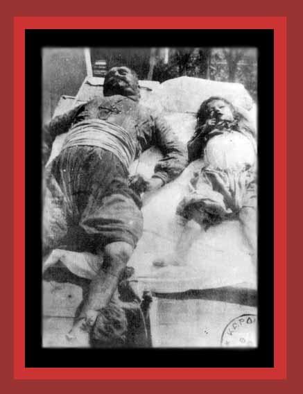

| From 1900 to 1923, Turkish dictators not only murdered about 2,100,000 Armenians, but near 350,000 Greeks as well. They also murdered well over 100,000 other Christians, Lebanese, Syrians, Kurds, and Moslem Turks. Here are two the Turks murdered, a young boy and his uncle. For documentation, see Death By Government and Statistics of Democide. Source: "The Greek Holocaust Of Thrace, Asia Minor And Pontos". |